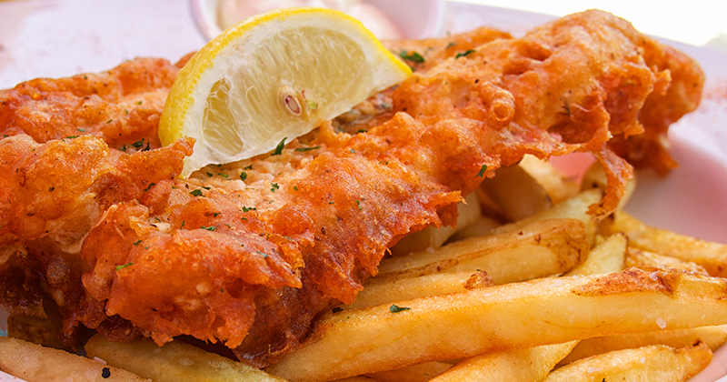

36 Scottish Food and Drink You Must Try
World-renowned seafood, sugary tablet, and even the birthplace of Scotch whisky: Scotland is a must-see destination for any foodie lovers.
So loosen that notch on your belt and prepare to bite into the ultimate Scottish food and drink collection.
Hungry?
1. Arbroath Smokies
Originally created in Arbroath, these haddock go through a traditional process dating back to the 1800s. First, they’re salted overnight to preserve them, then using a very hot, humid and smoky fire they’re cooked for around one hour.
To avoid burning the fish, it’s essential to use intense heat and thick smoke. This also provides the unique smoky taste and smell that people expect from Arbroath Smokies.
2. Fish Supper

Also known as Fish n’ Chips, this fried fish in batter with a side portion of deep-fried chips has become a staple meal in the UK. Which flavour you add to your fish supper is a very divided topic. In Glasgow, it’s common to add salt and vinegar. Whereas in Edinburgh, the most popular option is a combination of brown sauce and malt vinegar, simply known as ‘sauce’ or ‘chippy sauce’. Try both and you’re sure to have a favourite.
There’s many famous Chippies (Fish and Chip shops) in Scotland, where people travel long distances to devour their favourite greasy comfort food. We’d recommend the Anstruther Fish Bar along the Fife coast. You can grab one of their famous chippies on our St Andrews day tour.
3. Hand-Dived West Coast Scallops
Hand-dived scallops
can cost double the price of those trawled up by dredgers. However, greater
awareness about sourcing food in a more ethical and sustainable manner has led
to an increase in consumers willing to pay a premium for an artisan hand-dived
scallop.
4. Smoked Salmon
Scotland is regarded as having one of the highest quality salmon in the world. Thanks to an abundance of coastline you’re never too far away from a fresh mouthful. Head to Oban on our day tour to sample the best smoked salmon and shellfish.
5. Aberdeen Angus Beef
These are a breed of hornless cattle which originated in Aberdeenshire, around the North-East of Scotland. Most are black or red in colour and are now found all over the world. The beef can be marked as superior because of its marbling which improves the flavour, tenderness and keeps the meat moist while cooking.
6. Porridge
Porridge is a hot cereal dish made from boiling a grain, typically oats, in water or milk. It has become a common breakfast for many Scots. Sugar, honey, fruit or syrup is often added for flavour. Our friends in North America might call this oatmeal. It’s not only a healthy meal but also a source of high fibre which keeps you full for a long time.
7. Haggis
View this post on Instagram
A post shared by Spencer Bawden Photography (@spencerbawdenphoto) on
This is the most well-known Scottish dish and consists of sheep’s heart, liver and lungs mixed with oatmeal, spices, salt and stock. It was traditionally cooked encased in an animal’s stomach. However, nowadays it’s more likely cooked in an artificial casing instead. Some people love it, others hate it. You’ll have to make up your own mind.
8. Black Pudding
Black pudding is made from pork blood, with pork fat or beef suet, and a cereal; usually oatmeal, oat groats or barley groats. The high proportion of cereal, along with the use of certain herbs such as pennyroyal, serves to distinguish black pudding from blood sausages eaten in other parts of the world.
Stornoway is regarded by many as the best tasting black pudding. We stay there overnight on our Isle of Lewis tour, if you’re brave enough to give it a try.
9. Full Scottish Breakfast
View this post on Instagram
A post shared by GREAT British Food ???????? (@greatbritishfood) on
In Scotland, a full breakfast shares the same ingredients as a full English breakfast: eggs, back bacon, link sausage, baked beans, buttered toast, and tea or coffee. However, it can also include distinctive Scottish additions like black pudding, Lorne sausage and a tattie scone (potato scone).
10. Oatcakes
Oats are one of the few grains that grow well in the north of Scotland and were, until the 20th century, the staple grain used. Oatcakes are made by using oatmeal and cooking them on a girdle or baking tray. They're packed with slow-digesting, low-GI carbs, guaranteed to keep you full for hours and healthier than bread.
Popular commercial brands include Nairn’s, Paterson’s and Walkers.
11. Mull Cheddar Cheese
Isle of Mull Cheddar doesn't look or taste like any other cheddar.
The cows here have an unusual diet because they eat the fermented grain from the nearby Tobermory whisky distillery (must be the happiest cows in Scotland). This gives the cheese a pale ivory colour with a very sharp, fruity tang. It’s an artisan cheese made on Sgriob-ruadh farm using traditional methods and unpasteurised milk (that’s slightly alcoholic).
Luckily, you don’t have to go all the way to Mull to try it as you can grab some in our Edinburgh-based Rabbie’s Café.
12. Scotch Pie
Scotch Pie is a double-crust meat pie, usually filled with mutton or other meat. Sometimes they’re referred to as ‘football pie’ as they are often sold alongside other hot foods at football grounds. Scotch pies can be bought at many takeaway restaurants, bakeries and outdoor events. Besides being tasty, they’re also practical as the hard crust of the pie enables you to eat it by hand with no wrapping.
13. Bangers & Mash
View this post on Instagram
A post shared by SouthCoast_foodie (@southcoast_foodie) on
Bangers and mash is a traditional British meal of sausages and mashed potatoes. It’s common to use Cumberland pork sausages and onion gravy, which is generously dribbled on top. This dish is simple and easy to make in high volume, helping to cement it in our minds as classic pub grub.
In 2009, the dish was listed as Britain's most popular comfort food in a survey commissioned by TV channel Good Food.
14. Leek and Tattie Soup
Leek and tattie (potato) soup is a creamy classic which is sure to keep you warm in the cold winter months.
15. Cullen Skink
Cullen Skink is a thick Scottish soup made from smoked haddock, potatoes and onions. It traditionally comes from the Moray area of Scotland and is served with bread. Some people describe it as ‘smokier and more assertive than American chowder, but heartier than classical French bisque’.
16. Bacon Butty
View this post on Instagram
A post shared by Barnyard Grill - Woolmarket (@barnyardgrilldoncaster) on
A Bacon Butty, or a bacon sandwich, is a guilty pleasure in the UK. Hailed as the perfect hangover cure, this simple combination of buttered bread and bacon with ketchup will comfort you during that tough morning.
17. Stovies
Stovies are a heart-warming Scottish dish with a heavy emphasis on potatoes. While the recipes and ingredients vary, the main components are big chunks of potato, carrots, onions, fat and sometimes meat. The potatoes are cooked by slow-stewing in a closed pot with fat (lard or butter).
Oatcakes are often served on the side and used to scoop up some stovies for a tasty bite.
Sweet tooth?
Scotland has a love affair with candy. Sugar consumption is significantly higher than in other parts of the UK. But how did Scotland become obsessed with sweetness?
A large part of it comes from the British empire. During imperial expansion, a lot of raw cane sugar was shipped from the Caribbean back to the UK. Much of it ended up in refineries around Glasgow so that it could go through a process of granulation.
This abundance of cheap sugar around greater Glasgow led to a cottage industry of candy-making. ‘Sweetie Wives’ were women who bought this sugar in bulk and boiled it into home-made sweets, which they sold at local markets.
This fact, alongside the colder weather in Scotland, which makes the human body crave sugary food to spike blood sugar levels, helped create a culture of sugar-hungry Scots.
18. Tunnock's Tea Cakes
View this post on Instagram
A post shared by AMY • DIY Lifestyle Food Blog (@livinglocurto) on
These teacakes are
a national treasure and are often served with a cup of tea or coffee. They
consist of a small round shortbread biscuit, topped with hand-piped Italian
meringue and coated in milk chocolate. After being created in 1956 these
teacakes have become famous sweets in the UK and a great choice to have when
inviting guests over for a cuppa.
19. Caramel Logs
Tunnock’s is a brand that deserves a second mention with their popular Caramel Logs. These were created in Scotland in 1955 and consist of wafer and caramel covered in flavoured chocolate and lovely golden roasted coconut. It’s like a caramelly Kit Kat, but better, of course.
Interestingly, this product became very popular in the Middle East too.
20. Stoats Bars
Stoats Porridge Bars were created by an Edinburgh-based company who produce convenient and on-the-go snack bars made with oats.
You can try Stoats Bars, as well as Tunnock’s Teacakes and Caramel Logs in our Rabbie’s Café.
21. Berries
In Scotland, the areas around Fife, Angus and Perthshire are celebrated for their richness in red fruits. In particular, raspberries enjoy an ideal temperature and moisture there which doesn’t get searing heat like southern England, nor does it get as much rain or frost like the west of Scotland.
This middle ground of suitable weather and a healthy amount of rain helps farmers to produce these high-quality berries.
22. Marmalade from Dundee
Dundee Marmalade was created in 1797 in the Scottish city of Dundee. Originally produced by James Keiller and his wife, this preserve was distinguished by thick chunks of bitter Seville orange rind.
According to a Scottish legend, orange marmalade was created in Britain by accident. The tale tells of a boat carrying a cargo of oranges that broke down in Dundee port. This resulted in some ingenious locals making marmalade out of the cargo.
23. Chocolates from Durness
In the north west
Highlands of Scotland lies the town of Durness. Here you can visit Cocoa
Mountain and try some of the best-tasting gourmet chocolate in Scotland.
24. Whisky Ice Cream
View this post on Instagram
A post shared by Straight From The Curls (@straightfromthecurls) on
On a rare sunny day in Scotland, you can’t beat the combination of scotch whisky and ice cream. Using locally-sourced double cream and a generous dose of single malt scotch whisky, you can enjoy the cooling down sensation of the ice cream followed by the distinctive and uplifting notes of a high-quality whisky.
If you’re curious, we recommend visiting Scotch Corner in Pitlochry or Balvenie St Ice Cream in Dufftown.
25. Tablet
If you like sugar,
you’ll love this. Tablet is a medium-hard confection from Scotland. A variation
on the better-known fudge, tablet is made from sugar, condensed milk and
butter. It’s boiled and then allowed to crystallise. The result is a more
brittle and grainy texture than fudge.
26. Sticky Toffee Pudding
This is considered
a modern British classic dessert. It consists of very moist sponge cake,
covered in a toffee sauce and often served with vanilla custard or ice cream on
the side. If you have a sweet tooth then this is sure to satisfy you.
27. Shortbread
Shortbread is a
traditional Scottish treat, originally created from leftover bread dough known
as biscuit bread. By slowly removing the yeast and replacing it with butter,
you’re left with a much sweeter biscuit. It’s believed that Mary Queen of Scots
was a big fan and helped spread the popularity of it. It’s the perfect biscuit
for an afternoon tea break.
28. Edinburgh Rock Candy
Edinburgh Rock is a
confection that’s quite different from conventional rock candy. It contains
sugar, water, cream of tartar, colourings and flavourings. The texture is soft
and crumbly and is usually formed into sticks to be sold. Alexander Ferguson is
the genius behind it and during the 19
th century he took his
knowledge from working in the Glasgow confectionary trade to Edinburgh.
29. Scones
A scone is a popular British baked food, usually made of wheat or oatmeal with baking powder as the leavening agent. They’re a basic component of cream tea and are often served with jam or clotted cream. The most common varieties are plain, fruit or cheese scones.
30. Buttery
A buttery, also known as Aberdeen roll, is a savoury bread roll originating from the Scottish city of Aberdeen. They have a flaky texture and buttery taste, similar to a croissant, but slightly saltier. It’s common to spread jam or butter on them and eat alongside a cup of tea. The high-fat content inside makes them extremely hot when toasted.
One legend says butteries were first created for fishermen sailing from Aberdeen harbour. This is because they needed a food source which wouldn’t get stale during the weeks they were out at sea. The high-fat content also provided a valuable energy source.
31. Deep-fried Mars Bar
No sweet tooth list would be complete without mentioning the king of unhealthy snacks; the deep-fried Mars bar. This infamous treat was created in chip shops in Stonehaven, Scotland as a novelty item. You simply cook a normal Mars bar in the batter commonly used for deep-frying fish.
However, after being picked up by various mass media, its popularity has skyrocketed. You can now buy it in many chip shops in the UK and abroad as well as in some restaurants.
Mars Inc. has not publicly supported this practice as it goes against their commitment to promoting healthy and active lifestyles. We don’t blame them.
Thirsty?
32. Irn-Bru
View this post on Instagram
A post shared by IRN-BRU (@irnbru) on
Irn-Bru is the national hangover cure of Scotland. This ginger-coloured carbonated soft drink is made in Glasgow by A.G. Barr. It’s well-known for its bright orange colour and unusual super-sweet taste. Irn-Bru has a strong following of fans who consume their favourite beverage on a regular basis.
Watch one of their TV adverts or marketing campaigns and you’ll see how they’ve managed to tap into Scottish culture in a hilarious way.
33. Whisky
View this post on Instagram
A post shared by Malt Assembly (@maltassembly) on
Scotch, known simply as whisky in Scotland, derives from the Gaelic ‘uisge beatha’, or ‘water of life’. That should give you an idea about the significance this amber liquid has in Scottish history. You can read about the history of Scotch whisky here.
Scotch malt whiskies are divided into five main regions: Highland, Lowland, Islay, Speyside and Campbeltown. Each region has its own distinct flavour because of the local water used and varying processes. Single malt whisky comes from one of these regions whereas a blended Scotch whisky is a blend of single malts from different distilleries. 90% of whisky produced in Scotland is blended Scotch whisky.
Do a whisky tasting experience in one of Scotland’s cities to identify your favourite type. Then you can visit one of those distilleries to learn about the history, how its made and sample plenty of drams. Don’t worry, we’ll drive you home.
34. Hot Toddy
There are few
things better than a Hot Toddy on a winter’s evening. It’s made by mixing a
spirit (usually whisky), hot water, and honey or sugar. Not only is this tasty,
but some people believe it relieves the symptoms of the cold and flu. Victoria
Moore describes the drink as “the vitamin C for health, the honey to soothe,
the alcohol to numb”.
35. Beer
Scots may have whisky in their veins, but they still know how to enjoy a pint of ice-cold beer. From pub staples like Tennent’s Lager and Caledonia Best to craft beer agitators Brewdog, Scotland has a variety of home-grown beers.
Brewdog originated from Aberdeenshire and can now be found as far away as Australia. Tennant’s is brewed in Glasgow. Caledonian and Innis & Gunn are very popular brewers in Edinburgh.
36. Edinburgh Gin
If you’re more partial to a Gin & Tonic than a dram or pint, then try Edinburgh Gin. This award-winning small-batch distillery produces some of the finest gin in the world. Head to their visitor centre in the capital of Scotland to experience their guided tasting and try your hand at making your own.
So, now you’re prepared to taste your way around Scotland. Mull Cheddar in the western islands; Scotch in the Highlands; butteries in Aberdeen; and rock candy in Edinburgh; no corner of Scotland is left untouched from a diverse range of food and drink. Next time you’re in Scotland explore your palette with something new. Eat and drink with the locals to connect to a culture rich in flavour and hospitality.
Explore Further